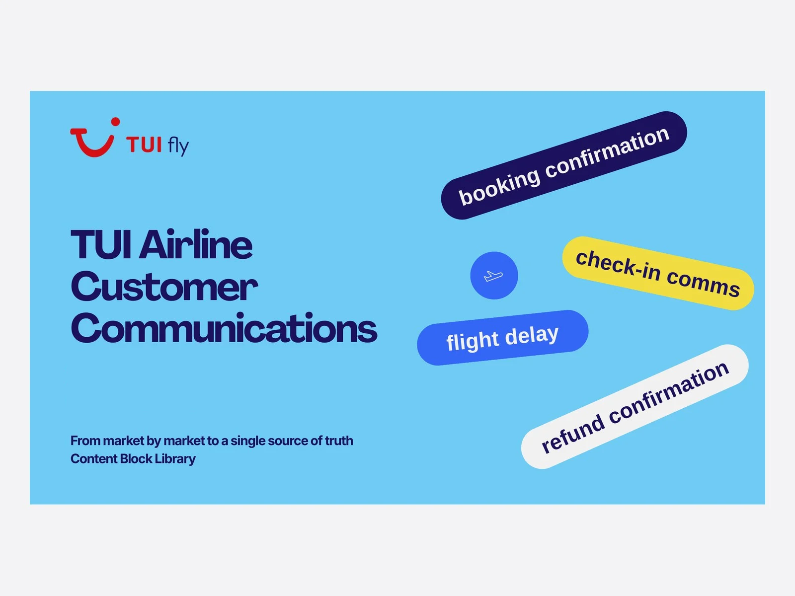
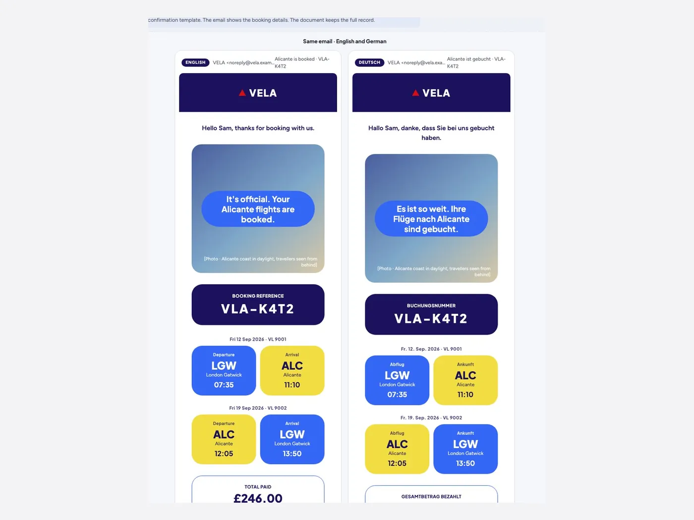
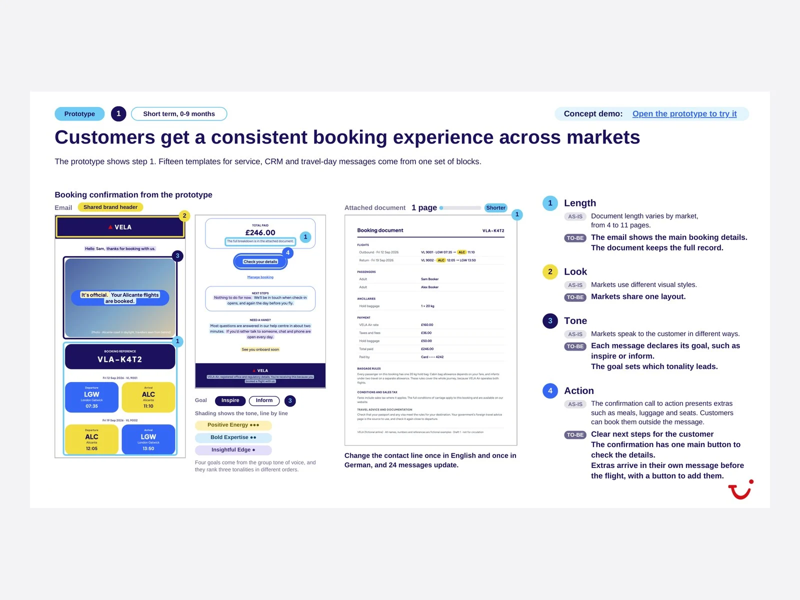
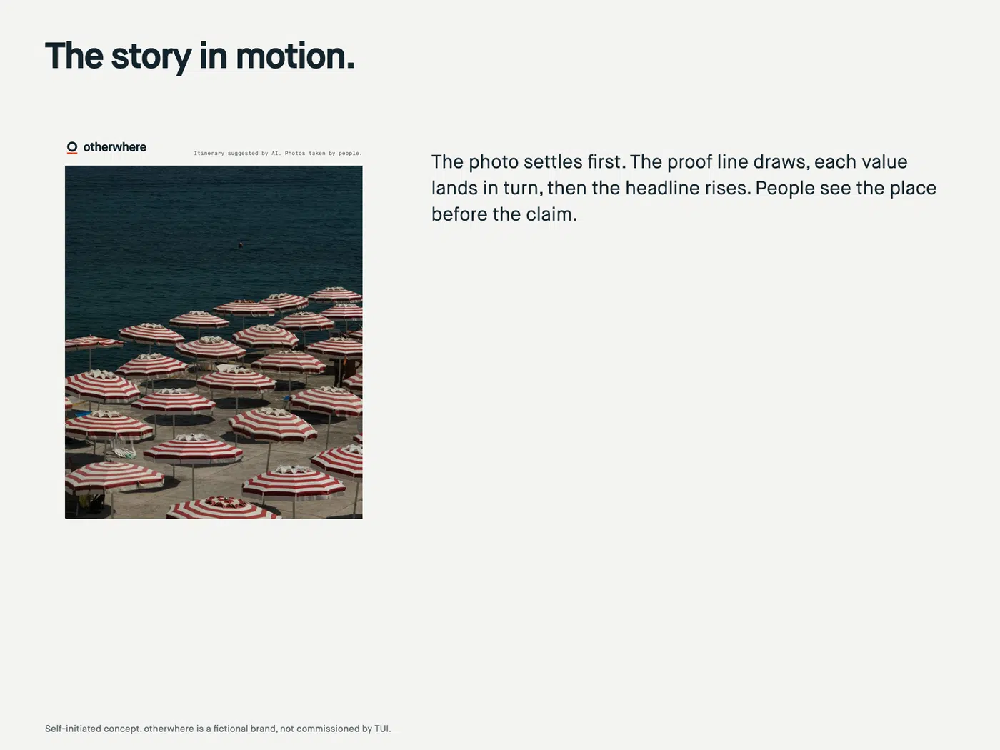
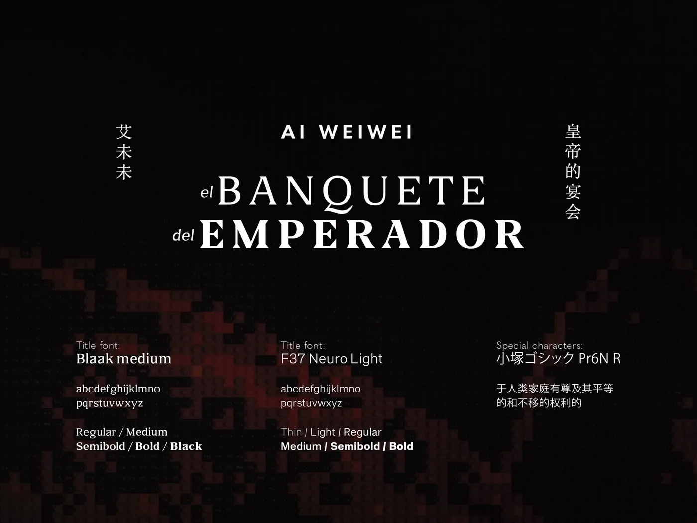
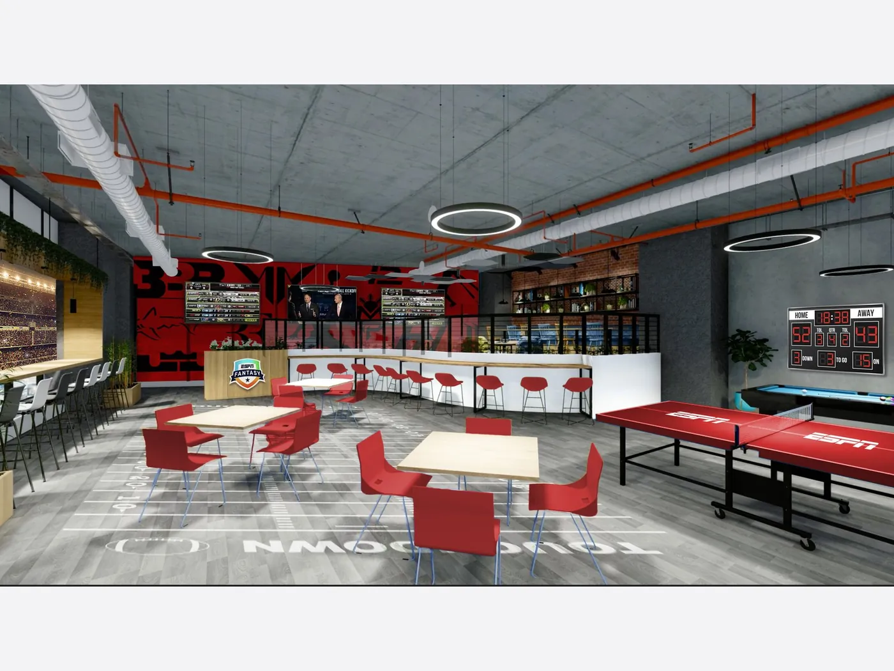
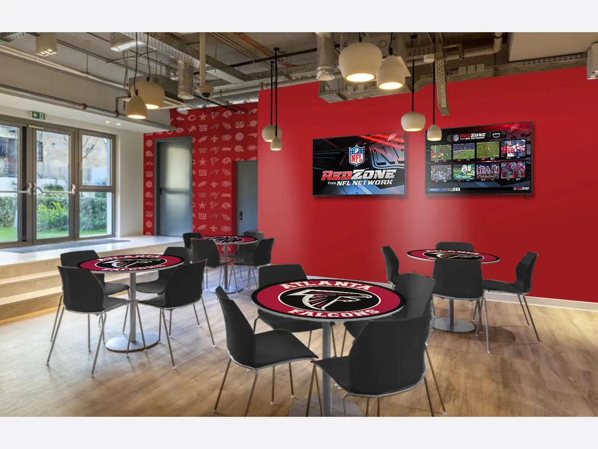

TUI Airline Customer Communications
TUI was bringing five airlines into one. Each market wrote and translated its own flight-only messages, so one change to a shared block could mean up to 55 edits across templates and five languages.
I designed a library of content blocks in three layers, booking data, editable wording and fixed elements, and built 15 templates for service, commercial and feedback messages from it. I tested it in VELA, a working prototype with a fictional airline brand, in English and German, with each line shaded by the group's tone of voice. I built it with the Product and Group CX teams, and the inflight team is set to build the first template change.
One edit now updates each template using the block, instead of up to 55. The system is now piloted for priority communications in the UK and Germany.
AI role: I built the VELA prototype with Claude. The structure, wording, tone and design decisions were mine, and photo areas stay as written briefs for real destination photography.
Content Design System | Templates and Toolkits | Multilingual Adaptation | AI Prototyping

VELA Prototype: the Same Email in English and German

One Layout Across Markets; One Demo Edit, 24 Messages

VELA is a fictional airline, built to test the system on sample bookings.
otherwhere: Someone's Been There
Self-initiated concept for a fictional tours and activities brand, built on TUI Musement's own research. 49% of travellers have used AI to plan a trip, and only 13% could tell an AI image from a real one.
I turned this insight into one idea, Someone's been there. AI plans the day, and each photo carries its proof, with who took it, where and when. Then I made it a loop. An AI answer cites real photos, a post-trip email asks travellers for their own photo, and a wall in store shows them. Spain sees the proof first, because it accepts AI imagery least.
Fifteen assets and a carousel come from one template and one copy table. The 20 photos are mine, taken in Genoa.
AI role: I chose the insight, the loop and the market rule, took the photos, picked where each one goes and redirected the design twice. Claude drew the first-round routes, proposed loop options, drafted the German and Spanish copy and built the template to my direction. All imagery is real photography.
Campaign Concept | AI-Assisted Workflow | Campaign Toolkit | Multi-Market Adaptation
Self-initiated concept with a fictional brand, built on TUI Musement research
Insight, the Proof Loop and the Plan


Round 1: Four AI Routes, Two Cut, Design Rebuilt Twice

Identity and the Photo Library

One System, Three Markets

Formats, in Context and in Motion


The Loop: an AI Answer, a Post-Trip Email, a Wall of Proof


The Toolkit and the AI Role


The Emperor's Feast, Ai Weiwei
Ai Weiwei's first exhibition in Colombia, shown in Bogota and then Medellín. My job was to open the Colombian market for his work.
I planned and bought the national media, sent the press releases and accompanied journalists. I cut the invitation four ways, so VIP collectors, press, catalogue subscribers and the general list each got their own reason to come, and I designed the bilingual catalogue.
15 outlets covered the show. The 500 catalogues sold out in the first month.
Campaign Planning | Paid Media and PR | Audience Segmentation | Editorial Print
Campaign Visual Architecture



Editorial Print Production | Full catalogue here


Exhibition Branding | Photography by Juan Pablo Velasco


ESPN Co-Branded Site, TTEC
TTEC opened a site in Colorado for ESPN, a new client, and the team there had to feel part of ESPN from day one.
I applied the site-branding standard to ESPN's brand. I mapped the floor zone by zone, wrote the graphics plan wall by wall with sizes and materials, made the renderings, and took production and installation through to the opening and the client visit.
After the opening I delivered, ESPN gave TTEC satisfaction scores of 90 to 100 out of 100.
Co-Branding | Site Branding | Renderings | Production and Installation
The Site at Opening
Renderings Before the Build


Graphics Plan, Wall by Wall


Agua Barú by Mustique
A four-villa island hotel near Cartagena needed its first sales piece, one guide for travel agents, its website and direct sales.
I led the project end to end with the owners. I adjusted the brand's colours and layout for editorial use, explored four layouts for each type of page, and designed the hotel's first sales brochure, an interactive guide in English and Spanish with its own navigation and a direct link to booking.
Travel agents, the website and direct sales now show one consistent identity, and the brochure helped lift direct bookings by around 20%.
Brand System | Editorial Design | Hospitality | Bilingual Digital
The Digital Brochure, English Edition
The Brand, Adjusted for Editorial Use
Layout Exploration: Four Options per Page Type
Site-Branding Standard, TTEC
TTEC needed each of its delivery centres around the world to feel like the same brand, and still feel local to the people working there.
I wrote and designed the site-branding chapter of TTEC's global brand guidelines: why branded spaces matter, a zoning framework, a creative balance for each new site, colour, materials and signage standards, a local layer, mockups and a nine-stage delivery model across Facilities, design and vendors.
The chapter now governs openings and rebrands across TTEC's centres. On the 15 site projects I worked on directly, the branding stage of each launch went from six weeks to three. As part of Wink Studio, our team received TTEC's Greatest Company Impact award for 2024-2025.
Brand Guidelines | Design System | Localisation | Multi-Market Rollout
Site-Branding Chapter, TTEC Global Brand Guidelines